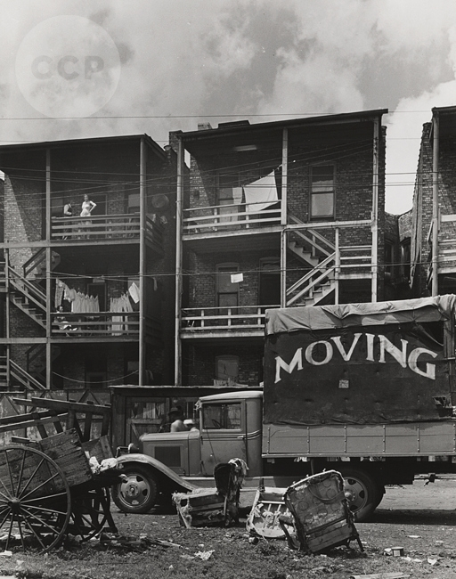
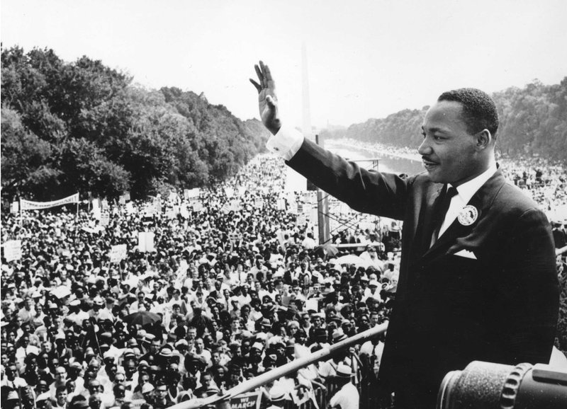
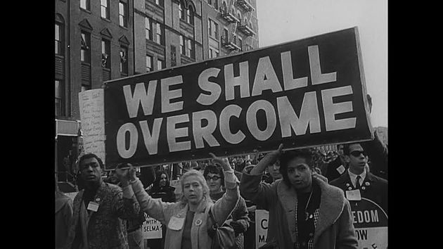
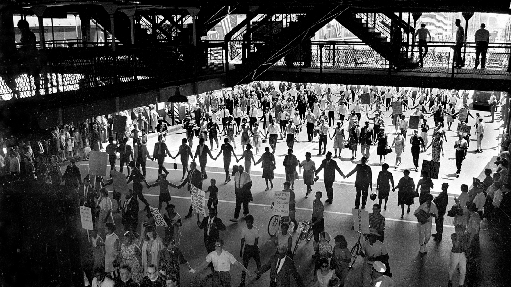
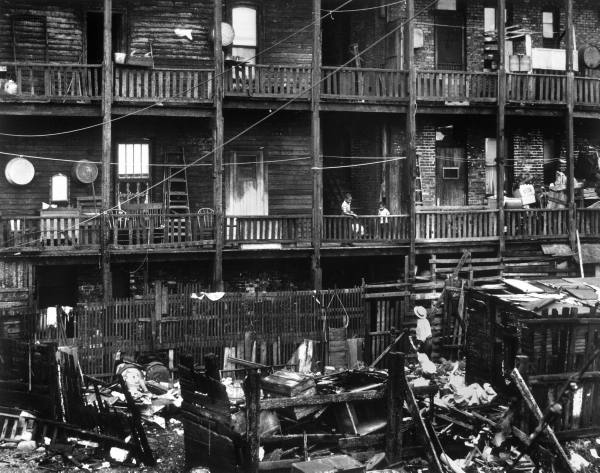

kitchenette building
-  African American
lives were nowhere near luxurious during the 1960s. They were treated with little respect and many suffered
through tough living conditions. There were many areas within Chicago that were designated specifically for
African American to live in. Often times the areas that African Americans lived in were dirty and were not
kept up with compared to other areas. A very common living space was known as a kitchenette building. A
kitchenette building is a small apartment building in Chicago. They first appeared in 1916 in Uptown, an area
located in Chicago. Brick buildings with medium and large apartments rented on a monthly basis were divided
into one-room units, using beaver-board partitions (Plotkin). The resulting units were often rented out by the
week as furnished rooms, although the amount of furniture offered was marginal. Within these small living spaces
consisted of two-three families all crammed into the area. There was minimal bathroom and cooking space. Due to
the small bathrooms, there were many plumbing problems which often led to unsanitary situations. Kitchenette
buildings were more prominent for African Americans. In a federal study during the 1930s, it was found that that
conditions for the African Americans were much worse than whites. They had less sunlight, space, and utilities.
Life in a kitchenette building was very crowded (Plotkin).
We are things of dry hours and the involuntary plan,
 Brooks uses the term “we” as a
way to address a lot of people (Brook, 1). She is speaking on behalf of African Americans during the 1960s. By
describing them as “dry hours,” this is referring that the people are tired and weary. Later in 2009, there is
a play written titled “Things of Dry Hours” which is about the life of a poor African American. In an article
published by the New York Times about the play, it quotes, “Later we learn of the Communist Party’s resistance
to including ‘Negroes,’ dismissed as being ‘content to drift through life,’” (Isherwood) which is a reference
to the poem. Gwendolyn Brooks states, “and the involuntary plan,” (Brooks 1) meaning that the African Americans
have to go along with what is happening during the times like segregation and that they drift through life. A
plan is usually something that is planned, however by stating that it is involuntary, this demonstrates that
they have to go with the way life was. They did not choose the life and rights they were given and they had to
go along with how their lives were. Segregation played a drastic role on the lives of African Americans and
there was no way around it because segregation was considered constitutional during this time period. The people
suffered each day in hopes that things would be easier and better.
Brooks uses the term “we” as a
way to address a lot of people (Brook, 1). She is speaking on behalf of African Americans during the 1960s. By
describing them as “dry hours,” this is referring that the people are tired and weary. Later in 2009, there is
a play written titled “Things of Dry Hours” which is about the life of a poor African American. In an article
published by the New York Times about the play, it quotes, “Later we learn of the Communist Party’s resistance
to including ‘Negroes,’ dismissed as being ‘content to drift through life,’” (Isherwood) which is a reference
to the poem. Gwendolyn Brooks states, “and the involuntary plan,” (Brooks 1) meaning that the African Americans
have to go along with what is happening during the times like segregation and that they drift through life. A
plan is usually something that is planned, however by stating that it is involuntary, this demonstrates that
they have to go with the way life was. They did not choose the life and rights they were given and they had to
go along with how their lives were. Segregation played a drastic role on the lives of African Americans and
there was no way around it because segregation was considered constitutional during this time period. The people
suffered each day in hopes that things would be easier and better.
Grayed in, and gray.“Dream” makes a giddy sound, not strong
-  During the 1960s, life for African
Americans was not easy. Segregation was apart of everyday life and African Americans were treated with little
respect. There were many key figures that played an inspiring role in the lives of African Americans, one in
particular was Martin Luther King. Martin Luther King was a leader in the Civil Rights movement and his goal
was to end segregation. Gwendolyn Brooks is influenced by his persuading words and uses the word “Dream” in
her poem. She includes the word in quotes, as a reference to Martin Luther King and because he is someone who
had a dream during the time she wrote the poem. She includes that the word “makes a giddy sound,”(Brooks 2)
meaning that when the word is spoken, it gives someone a very inspired and motivated feeling. In his most
known speech, “I Have A Dream,” he uses his powerful and inspirational words that eventually changes the world.
Within his speech, he uses the term “I have a dream…” followed by something he wished to see in the future,
for example, Martin Luther King states, “I have a dream that one day this nation will rise up and live out the
true meaning of its creed: ‘We hold these truths to be self-evident, that all men are created equal.’” (King 4).
This shows that people during this time period were hopeful for the future. A future where everyone has the same
rights and not one group is denied rights.
Like “rent,” “feeding a wife,” “satisfying a man.”
But could a dream send up through onion fumes
Its white and violet, fight with fried potatoes
And yesterday’s garbage ripening in the hall,
Flutter, or sing an aria down these rooms
Even if we were willing to let it in,
-  This line is demonstrating the snap back into
reality. The author has let the reader escape into the thought of what a dream could be like. The author is
relating this back to the small kitchenette building where the poem takes place. It was so crowded in the
buildings that the thought of a dream almost seems impossible. Segregation was another big factor in deciding
whether a dream was possible. African Americans were treated with less rights compared to whites. They were not
given the right to vote until the 15th Amendment was created, however it sparked more hatred from the whites
because they did not like the idea that people who were once enslaved now had equal rights. This resulted in
Jim Crow laws being created (History.com Staff “Civil Rights Movement”). These separated African Americans
from whites in schools, public restrooms, restaurants, stores… etc. Many people protested and violent riots
started shortly after the Jim Crow laws. Eventually, the Eisenhower administration pushed Congress to pass new
Civil Rights acts. President Eisenhower signed the Civil Rights Act of 1957 which allowed anyone who prevent
anyone the right to vote to be prosecuted (History.com Staff “Civil Rights Movement”). Although some African
Americans suffered to gain equal rights, some had hoped that their lives would become better (History.com
Staff “Civil Rights Movement”).
Had time to warm it, keep it very clean,
Anticipate a message, let it begin?
-  During the 1960s, there were many protests
and demonstrations all over the United States by African Americans. African Americans protested because they
wanted to gain equal rights under the law of the United States (History.com Staff “Black History”). They had to
suffer through the Jim Crow Laws, segregation and having to pass literacy test in order to vote. Many African
Americans would do peacefully protest such as: marches ,sit-ins, and boycotts to try to get the rights that
they were guaranteed from the Constitution. The 14th Amendment in particular guaranteed African Americans
equal protection under the law (History.com Staff “Black History”). The author views the Civil Rights movement
as a message for change in the United States. The civil rights movement started in the 1950s and last for two
decades and was an unprecedented fight for equality (History.com Staff “Black History”). They fought for the
fact that the United States could become a place where everyone can have their guaranteed equal rights under
the constitution, and no laws could limit one groups power over any other group. The Author is hopeful for the
future when the author states: “let it begin” (Brooks 10). The Author is seeing the Civil Rights movement as a
sort of hope for the future. People were working together during the Civil Rights Movement to help gain rights
to a section of society that was without them due to them not being seen as equals. The fact that people were
working together is showing hope for the future.
We wonder. But not well! not for a minute!
Since Number Five is out of the bathroom now,
We think of lukewarm water, hope to get in it.
-  Within the kitchenette buildings,
there was a little bathroom space which was shared with all of the residents and the African Americans struggled
with the use of hot water due to so many people living in the building. The Author shows hope for the future when
the author states: “We think of lukewarm water”(Brooks 13). The Author implies that conditions will get better
eventually. Despite the harsh reality that the African Americans have to face, they are hopeful that life will get
better. Each day was a battle for equal and more rights. During the 1960s, public housing was one thing that
African Americans wanted to be improved. Public housing was a form of government housing in which they were f
unded in part by federal money but were mostly controlled by local governments. The goal of public housing was
to provide living areas in the cities that needed them. Public housing was established in the United States in
1937 during the Great Depression as part of Franklin D. Roosevelt’s New Deal Plan as a way to offer affordable
housing. Although the housing areas were helpful and created living space, they quickly developed the reputation
as being poorly maintained and crimes rates were high (Bratt). The buildings were poorly maintained and were
very small. Families that lived in kitchenette building lived in a one room apartment with some living space
and a kitchen. African Americans that lived inside these kitchenette building hoped that conditions improved
so they did not have to live in such cramped conditions.